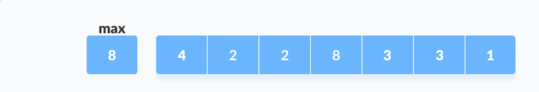
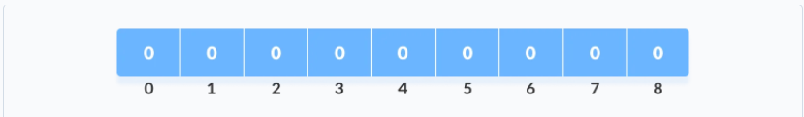
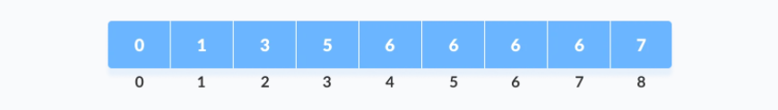
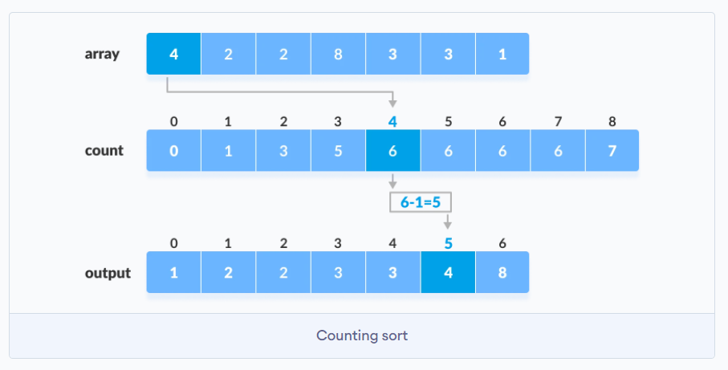

🧮 Algoritmos de ordenación
La ordenación es una de las técnicas fundamentales en programación: muchas veces primero ordenamos y luego buscamos (por ejemplo con búsqueda binaria), porque en una colección ordenada las consultas suelen ser más eficientes.
En esta unidad veremos tres algoritmos muy didácticos y clásicos para trabajar con arrays:
- 🫧 Bubble sort (Burbuja) — comparaciones e intercambios adyacentes
- 🃏 Insertion sort (Inserción) — “como ordenar cartas en la mano”
- 🔢 Counting sort (Conteo) — sin comparaciones, usando un array auxiliar de conteo
🧭 ¿Cuál usar y cuándo? (resumen rápido)
| Algoritmo | ¿Compara elementos? | ¿Necesita array auxiliar? | ¿In-place? | ¿Cuándo brilla? | Peor caso |
|---|---|---|---|---|---|
| 🫧 Burbuja | ✅ Sí | ❌ No | ✅ Sí | Muy didáctico (pero lento) | O(n²) |
| 🃏 Inserción | ✅ Sí | ❌ No | ✅ Sí | Arrays pequeños o casi ordenados | O(n²) |
| 🔢 Counting | ❌ No | ✅ Sí (count/output) | ❌ No | Enteros no negativos y rango pequeño | O(n + k) |
📌 Nota: en Counting sort, k es el valor máximo (o el tamaño del rango).
🫧 1) Bubble sort (Burbuja)
Funciona comparando pares adyacentes e intercambiándolos si están en el orden incorrecto. Este proceso se repite desde el principio del array hasta que todos los elementos están en orden.
En cada pasada, se dice que el mayor “burbujea” hacia el final.
Sabemos que todos los elementos están en orden cuando logramos hacer toda la iteración del array sin intercambiar ningún elemento en absoluto
🧩 Dibujito (paso a paso)
Array inicial:
[4, 2, 1, 5, 3]
Primera pasada (bucle interno):
[4, 2, 1, 5, 3] (4 > 2) -> swap
[2, 4, 1, 5, 3] (4 > 1) -> swap
[2, 1, 4, 5, 3] (4 > 5) -> no swap
[2, 1, 4, 5, 3] (5 > 3) -> swap
[2, 1, 4, 3, 5] ✅ al final, el 5 ya está colocado
➡️ Repetimos pasadas hasta que en una pasada no haya swaps (ya está ordenado).
Ejemplo:
[4, 2, 1, 5, 3] - Paso 1: como 4 > 2, los intercambiamos
[2, 4, 1, 5, 3] - Paso 2: como 4 > 1, los intercambiamos
[2, 1, 4, 5, 3] - Paso 3: como no se cumple 4 > 5, los dejamos igual
[2, 1, 4, 5, 3] - Paso 4: como 5 > 3, los intercambiamos
[2, 1, 4, 3, 5] - Este es el resultado del array después de la primera iteración del bucle externo.
Como al menos se produjo un intercambio durante la primera iteración (en realidad hubo tres), debemos revisar todo el array otra vez y repetir el mismo proceso.
Repetiremos este proceso, hasta que no se realicen más intercambios, que será cuando tengamos el array ordenado.
La razón por la que este algoritmo se llama Bubble sort es porque los números "burbujean" hasta la "superficie".
💻 Implementación en Java
public class Sorts {
public static void bubbleSort(int[] a) {
boolean ordenado = false;
while (!ordenado) {
ordenado = true;
for (int i = 0; i < a.length - 1; i++) {
if (a[i] > a[i + 1]) {
int tmp = a[i];
a[i] = a[i + 1];
a[i + 1] = tmp;
ordenado = false;
}
}
}
}
}
📌 Complejidad temporal
- 🔥 Peor caso:
O(n²)(ej:[5,4,3,2,1]) - ⭐ Mejor caso (con swapped):
O(n)(si ya está ordenado)
🃏 2) Insertion sort (Inserción)
Es muy famoso porque se entiende como ordenar cartas en la mano:
- La parte izquierda del array se considera una zona ordenada.
- Cogemos el siguiente elemento (
key) y lo insertamos en su posición correcta, desplazando a la derecha los mayores.
🧩 Dibujito (cómo se “mueven” las cosas)
Ejemplo:
array: [5, 2, 4, 6, 1, 3]
i = 1, key = 2
Zona ordenada: [5]
Insertamos 2:
[5, 2, 4, 6, 1, 3]
^
key=2
Comparo 5 > 2, desplazo 5 a la derecha:
[5, 5, 4, 6, 1, 3]
Coloco key en su sitio:
[2, 5, 4, 6, 1, 3]
i = 2, key = 4
Zona ordenada: [2, 5]
[2, 5, 4, 6, 1, 3]
^
key=4
5 > 4 -> desplazo 5:
[2, 5, 5, 6, 1, 3]
Coloco 4:
[2, 4, 5, 6, 1, 3]
➡️ Y así hasta el final.
💻 Implementación en Java
public class Sorts {
public static void insertionSort(int[] a) {
for (int i = 1; i < a.length; i++) {
int key = a[i];
int j = i - 1;
// desplaza a la derecha los mayores que key
while (j >= 0 && a[j] > key) {
a[j + 1] = a[j];
j--;
}
// inserta key en su sitio
a[j + 1] = key;
}
}
}
📌 Complejidad temporal
- 🔥 Peor caso:
O(n²)(si está al revés) - ⭐ Mejor caso:
O(n)(si ya está ordenado o casi ordenado)
✅ Por eso es muy buena elección cuando el array es pequeño o casi ordenado.
🔢 3) Counting sort (Conteo)
El counting sort no compara elementos entre sí.
Funciona contando cuántas veces aparece cada valor y reconstruyendo el array.
⚠️ Requisito típico en esta versión: enteros no negativos y rango razonable (no tiene sentido si el máximo es enorme).
🧩 ¿Cómo funciona? (paso a paso con imágenes)
- Encuentra el elemento máximo
maxdel array dado.
- Crea un array de longitud
max + 1con todos los elementos a 0. Este array se utiliza para almacenar el recuento de los elementos del array.
- Almacena el recuento de cada elemento en su índice respectivo en el array de recuento. Por ejemplo: si el elemento 3 aparece 2 veces en el array, entonces 2 se almacena en la tercera posición del array de recuentos. Si el elemento "5" no está presente en el array, entonces 0 se almacena en la quinta posición.
- Almacena la suma acumulativa de los elementos del array de recuentos. Es útil colocar los elementos en el índice correcto del array ordenado.

- Encuentra el índice de cada elemento del array original en el array de conteo. Esto da el recuento acumulativo. Coloca el elemento en el índice calculado como se muestra en la figura siguiente.

- Después de colocar el elemento en la posición correcta del array ordenado, disminuye el array de recuento para ese índice en uno.
💻 Implementación en Java (simple)
Versión sencilla: reconstruye el array usando el array count (sin “output” aparte).
public class Sorts {
public static void countingSort(int[] a) {
if (a.length == 0) return;
int max = a[0];
for (int v : a) {
if (v < 0) throw new IllegalArgumentException("Counting sort: no admite negativos (en esta versión).");
if (v > max) max = v;
}
int[] count = new int[max + 1];
// contar
for (int v : a) count[v]++;
// reconstruir
int idx = 0;
for (int value = 0; value < count.length; value++) {
while (count[value] > 0) {
a[idx++] = value;
count[value]--;
}
}
}
}
📌 Complejidad
- Tiempo:
O(n + k)(n = elementos, k = rango) - Memoria:
O(k)(por el arraycount)